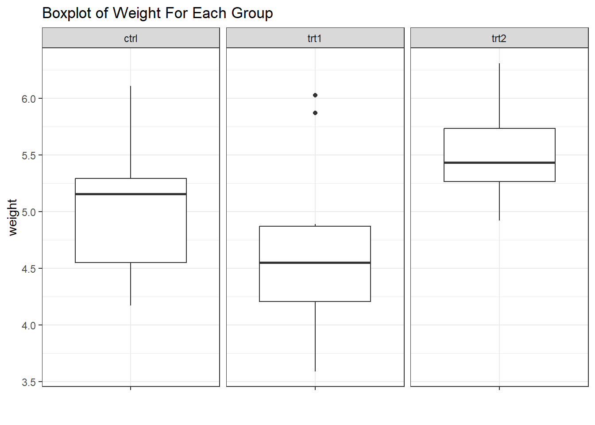
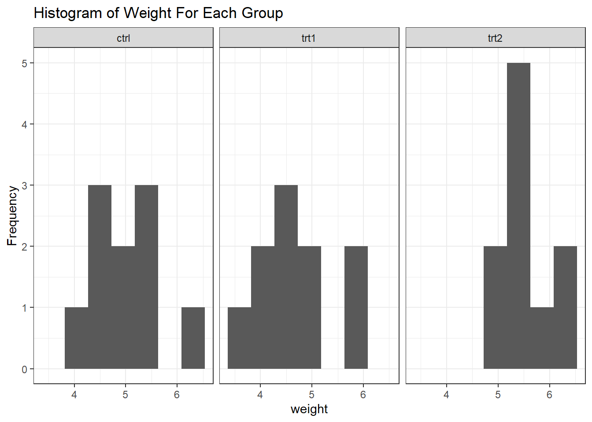
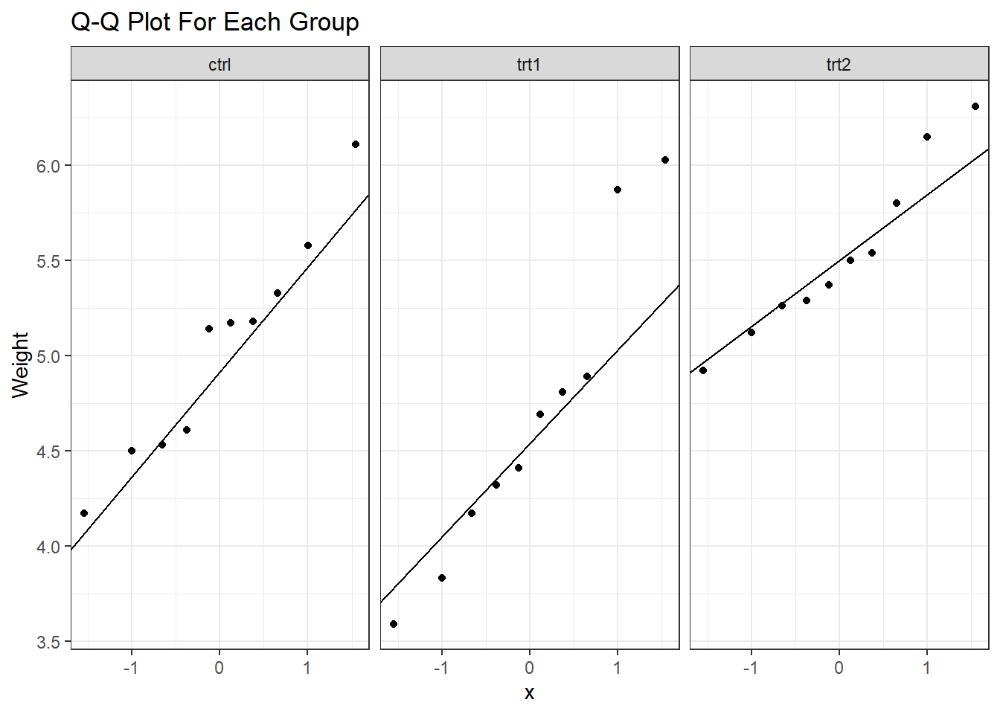

Chapter 4 Introduction
Learning Objectives
To develop and apply population parameter point estimates
To create and interpret confidence intervals
To understand p-values and statistical significance
To test hypotheses using statistical techniques
By conducting a statistical analysis, we usually want to infer something about the population under study by applying statistical methods to the data collected. These inferences fall into two categories: estimation and hypothesis testing.
4.1 Estimation
Estimation is the process of inferring the value of a population parameter from a sample. This involves deriving point estimates and confidence intervals.
As an example, imagine that a researcher records the mass in kilograms of 100 Yellowfin Bream (Acanthopagrus australis) caught along the NSW coast. The sample has a mean of 1.3kg and a standard deviation of 0.4kg.
Point Estimate - A single-valued statistic given as an estimate for a population parameter e.g. the mean of a sample (\(\bar{x}\)) is given as the estimate for the population mean (\(\mu\))
The point estimate for the Bream example would be the sample mean, 1.3kg.
Confidence Interval (CI) - There is an n% probability that the parameter of interest is contained within a given confidence interval. Hence, for a 95% CI, there is a probability of 95% that the interval contains the parameter.
A confidence interval is calculated using the formula \(\bar{x}\pm\text{MOE}\) where MOE is the margin of error.
For example, the MOE for the Bream example would be based on a t-distribution since the population standard deviation is unknown. This would give \(\text{MOE}=1.9842\times\frac{0.4}{100}\), and the 95% CI for the mean would be \(1.3\pm0.07937=[1.22, 1.38]\). There is a 95% probability that this interval covers the true population mean.
The method for calculating confidence intervals depends on the parameter of interest. Statistical software can calculate automatically the most common confidence intervals for a given data set.
Activity
Replicate the above calculations using the Statistics Kingdom Confidence Interval Calculator.
4.2 Hypothesis Testing
The boxplot for the PlantGrowth data set below suggests there is a difference in the mean between the trt1 and trt2 groups, but how can we test this hypotheses in a quantitative way? This is the purpose of statistical tests.

A statistical test returns a test statistic which is used to decide if the data provides enough evidence to reject the null hypothesis. If the test statistic is beyond the predetermined significance level (\(\alpha\)), then the test result is described as statistically significant.
The process for applying a statistical test can be summarised as:
- Form a null hypothesis, \(H_0\)
- Form an alternative hypothesis, \(H_a\)
- Decide on an acceptable significance level, \(\alpha\), (usually 5%, or \(\alpha = 0.05\))
- Apply an appropriate statistical test
- Use the p-value returned from the test to decide if the null hypothesis should be rejected
- Report your results
Continuing with the example above,
\(H_0:\) There is no difference in the means of trt1 and trt2.
\(H_a:\) There is a statistically significant difference in the means of trt1 and trt2
The appropriate test for the difference in means for two independent groups is the independent t-test. Applying this test with a 5% significance level (\(\alpha = 0.05\)) to the two groups gives \(p = 0.009298\).
The results of the test could be reported as
“Applying the independent samples t-test produced a significant p-value (\(p = 0.009298\)) at the 5% significance level (\(\alpha = 0.05\)). Hence, the null hypothesis was rejected, and it was concluded that there was a statistically significant difference in the means of trt1 and trt2.”
Notice that the null hypothesis was rejected. It would be incorrect to state that the alternative hypothesis was accepted because at the stated significance level, there was still a 5% chance that the null hypothesis was correct.
Returning to the boxplot for the PlantGrowth data set, is it likely that there is a true difference in mean between the ctrl and trt1 groups? Perhaps the lower relative position of the trt1 boxplot is simply due to the randomness of sampling in this case, since there is considerable overlap between the two groups. Performing the same test as that used to compare groups trt1 and trt2 gives a non-significant p-value (0.2504), so there is not enough evidence to reject the null hypothesis.
The results of the test could be reported as
“Applying the independent samples t-test did not produce a significant p-value (\(p = 0.2504\)) at the 5% significance level (\(\alpha = 0.05\)). Hence, the null hypothesis was not rejected, and it was concluded that there was no statistically significant difference in the means of ctrl and trt1.”
p-value Controversy
There is considerable debate about the misuse of p-values in research. In particular, a significant result from a single statistical test does not necessarily indicate a reliable finding. Integration of information from other sources and replication are required to confirm a significant result. See, for example, “The Debate about p-values”, Lu Y, Belitskaya-Levy I
Borderline p-values are also problematic. For example, if a statistical test for the difference in mean between two groups has \(p=0.049\), should the null hypothesis be rejected at a 5% (0.05) significance level?
4.3 Exercise: Hypothesis Testing
Reproduce the hypothesis tests for the PlantGrowth data set. Use both Statistics Kingdom and Excel. Compare the results.
Note: You may need to activate the Analysis ToolPak in Excel to complete statistical tests.
4.4 Power of a Statistical Test
The power of a test is its ability to detect an effect if one exists. An effect in this context is anything that does not happen merely due to chance. This means an effect is a real feature of the population of interest. For example, if the means of two groups actually are different, the power of a test is its ability to detect that difference.
Mathematical Definition of Power
\(\text{Power} = 1-\beta\) where \(\beta\) is \(\text{P(Type II error)}\).
A \(\text{Type II}\) occurs when a true effect is not found by a statistical test, so the power of a test is the probability of a statistical test finding an effect if the effect exist.
4.4.1 Maximising Power
Since most scientific research aims to reject the null hypothesis when there is a true effect (i.e. the null hypothesis is false), researchers need to maximise the power of their experiments. This can be done in several ways. By,
- designing experiments to maximise the size of effects e.g. by controlling all variables that might affect the variable of interest
- increasing sample size
If you have a reasonable idea (e.g. based on previous research) about the sizes of the effects you are trying to detect in your experiment, you can complete a power analysis to determine the sample size required for a given experimental design. This might, however, be a problematic process (see, for example, “11.8: Effect Size, Sample Size and Power”, Navarro D, last paragraph).
Activity
Use the Statistics Kingdom Sample Size Calculators to investigate the recommended sample sizes for various statistical tests. What did you find difficult when using these calculators?
4.5 Statistical Test Assumptions
Certain assumptions about the sample and/or the population being studied need to be met so that a given test will produce valid results. These assumptions vary from test to test. Common assumptions include
- the sample is drawn from a normally distributed population
- the observations in the sample are independent i.e. the probability of including an element in the sample has no effect on the probability of including any of the other elements.
- the observations are pairwise dependent e.g. paired t-test
- the population standard deviation is known
- the two groups being compared have equal standard deviations
It is vital that the assumptions of a test are checked and met before applying the test.
4.5.1 Checking Normality
If your chosen test requires your data to be normally distributed, you should check this assumption before applying the test. If your data has groups, check that each group is normally distributed.
Some common methods to check for normality are
- plot a histogram and look for a “humped” shape
- create a quantile-quantile plot
- perform a test for normality e.g. Shapiro-Wilk Test (\(H_0\): Data normal)
Running all three of these checks is recommended since they are not necessarily conclusive on their own.
Here are the three methods from above applied to the PlantGrowth data set.


| PlantGrowth Shapiro-Wilk Test For Normality | |
p-values of weight for each group |
|
| group | p |
|---|---|
| ctrl | 0.7474734 |
| trt1 | 0.4519440 |
| trt2 | 0.5642519 |
4.6 Common Statistical Tests
The table below outlines some of the common statistical tests used in scientific research. Parametric tests require that the data in each group is normally distributed. If this is not the case, then use the Non-parametric test.
Adapted from The Statistics Tutor’s Quick Guide to Commonly Used Statistical Tests, pp.10-11
| Purpose | Dependent Variable | Independent Variable | Parametric Test (normal) | Non-parametric Test (skewed or ordinal) |
|---|---|---|---|---|
| Comparing means of two independent groups | Discrete or continuous | Nominal (two groups) | Independent T-test | Mann-Whitney Test; Wilcoxon Rank Sum |
| Comparing means of two paired (before / after) groups | Discrete or continuous | Ordinal (two groups) | Paired T-test | Wilcoxon Signed Rank Test |
| Comparing Means of 3+ independent groups | Discrete or continuous | Nominal (three or more groups) | One-way ANOVA | Kruskal-Wallis Test |
| Relationship between two continuous variables | Continuous | Continuous | Pearson’s Correlation Coefficient | Spearman’s Correlation Coefficient |
| Expected counts for one qualitative variable | Qualitative | None | Not applicable | Chi-squared Test |
| Relationship between two qualitative variables | Qualitative | Qualitative | Not applicable | Chi-squared Test |
4.7 Online Tools
Statistical Test Finder, Statistics Kingdom
Shapiro-Wilk Calculator, Statistics Kingdom
4.8 Further Reading
Estimation, Shafer and Zhang
Confidence Intervals, Pennsylvania State University
Estimating a Confidence Interval, Navarro D
An Introduction to Statistics: Choosing the Correct Statistical Test, Ranganathan, P